Manual de uso
Como estudar guitarra com o app: sessão do dia, módulos, treinos e ajustes.
Abra o endereço no navegador do celular e adicione à tela inicial: ele passa a abrir como um aplicativo, em tela cheia.
O app pergunta: “É assim que você vê sua guitarra?” Segure a guitarra na posição de tocar, olhe para o braço de cima e compare.
Quando bater, toque em Sim, é assim. Todo braço do app passa a seguir essa orientação. Dá para mudar depois em Ajustes.
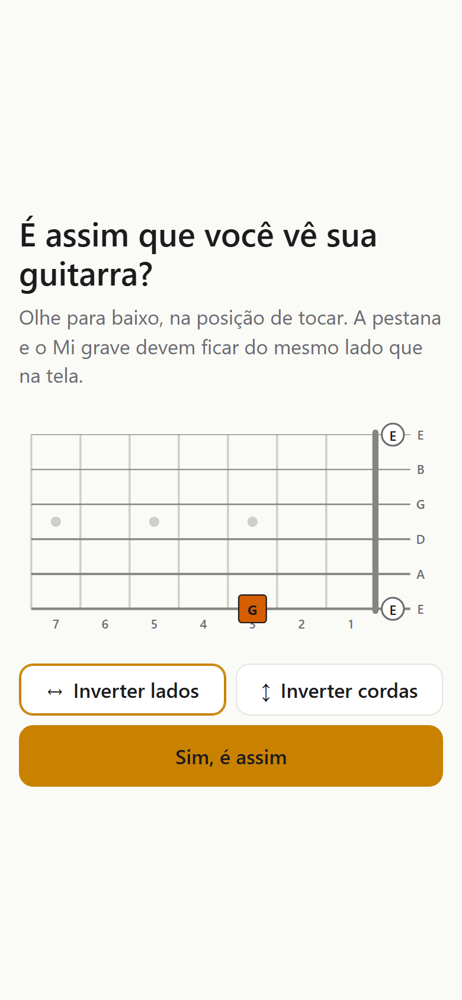
2Depois da calibração vem um diagnóstico de uns 10 minutos: tríades nas formas de E e A, a pentatônica nas 5 formas e nomes de notas no braço.
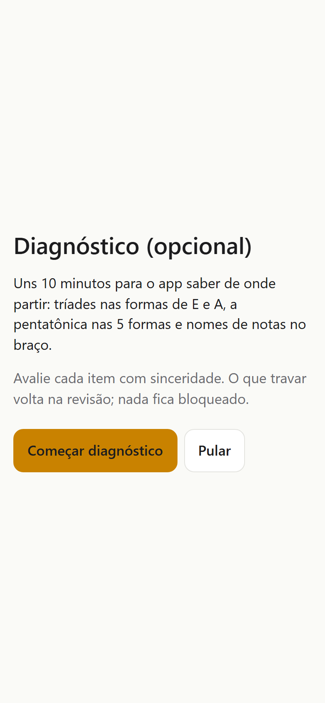
3O braço é sempre horizontal e espelhado para canhoto. Cada nota tem uma função, mostrada por cor e formato (dá para ler sem enxergar cores):
Nota (C, D♭…), grau (T, 3, b3, 7M…), intervalo ou dedo, conforme Ajustes. Em acordes e lições há um botão Graus / Notas para alternar na hora.
A faixa clara sobre o braço marca a forma CAGED do exercício. Toque em qualquer ponto para ouvir a nota.
4A tela Hoje monta seu treino. Escolha 10, 20 ou 30 min e toque em Começar.
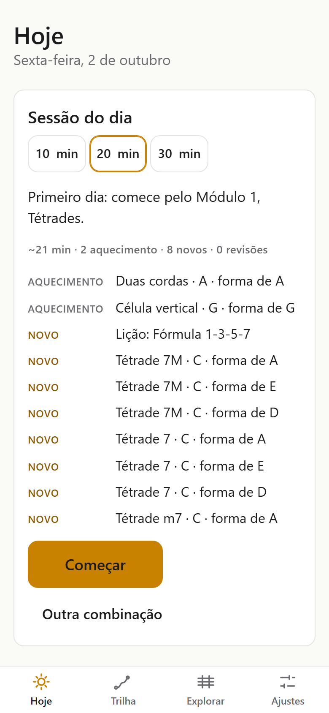
5Mostra quantos itens ficaram Limpo, Quase e Travou, o que subiu de caixa e quando cada item volta.
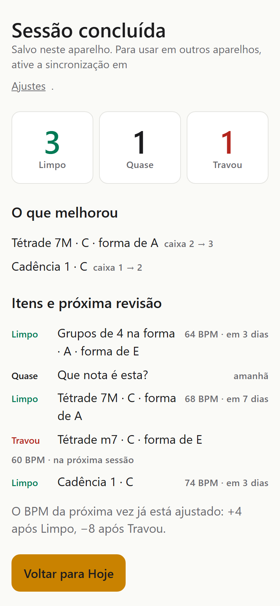
6Tudo cabe numa tela, sem rolar:
Ouça primeiro, depois toque junto. O ponto que está soando fica aceso no braço.
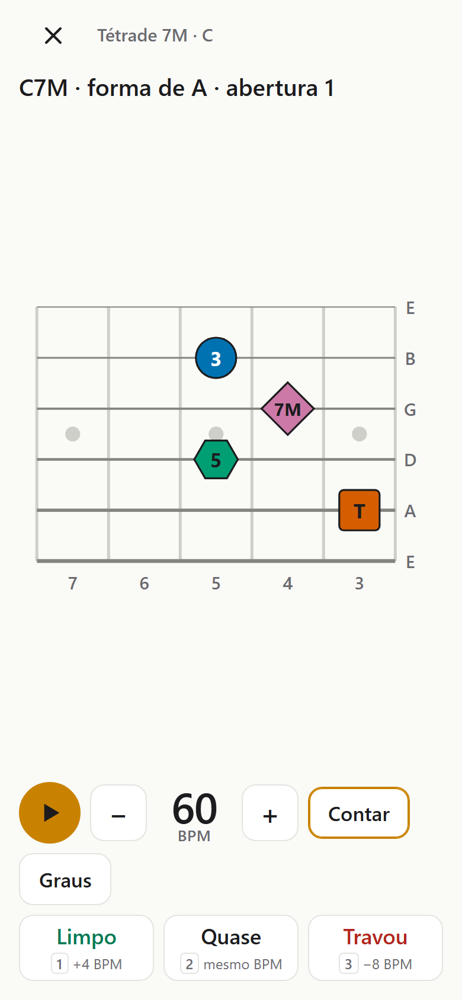
7| Limpo | sobe uma caixa. Volta em 1, 3 ou 7 dias (caixa 1, 2 ou 3). |
| Quase | fica na mesma caixa. Volta amanhã. |
| Travou | volta para a caixa 1. Reaparece na próxima sessão. |
Depois de avaliar fora da sessão: Repetir ou Próximo (Enter).
8Um acorde, arpejo ou padrão aparece no braço. Toque ▶ para ouvir e acompanhe no metrônomo. Comece devagar; o app sobe o BPM conforme você avalia.
Ao fim, o app mostra acertos e tempo médio e sugere uma avaliação (Enter aceita).
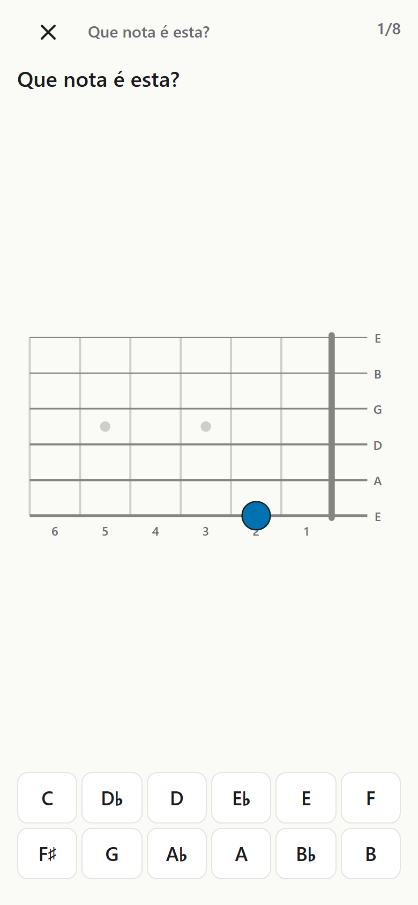
9Perguntas rápidas com 4 opções: “Que acorde é este?”, “Qual é o V7 de E♭?”, “Relativa menor de F?”. Ao responder, o certo fica verde.
Uma sequência de acordes toca em loop com bateria, baixo e pad. O acorde atual fica destacado em cima, e o braço mostra o desenho dele.
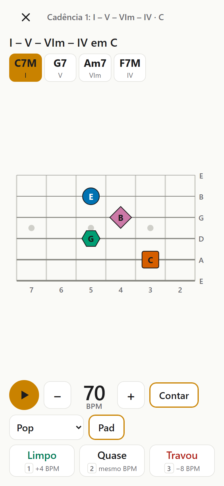
10Usado nos aquecimentos:
Quer treinar o ouvido? Ocultar esconde o diagrama.
O ritmo (colcheias, tercinas ou semicolcheias) aparece entre parênteses na instrução.
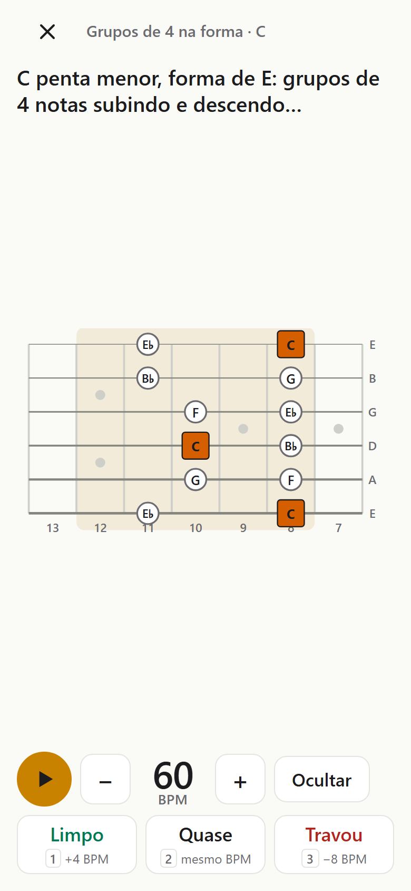
11A Trilha é para escolher por conta própria. Cada módulo tem lições, exercícios e uma barra de checkpoint.
| Módulo 1 | Tétrades: 7M, 7, m7, m7(b5) e °; aberturas 1 e 2; omitir notas. |
| Módulo 2 | Campo harmônico: os 7 acordes de um tom, funções, relativas e 8 cadências com base. |
| Módulo 3 | Arpejos no CAGED: nas 5 formas e ligando as formas. |
| Treino | Mapa do braço: nomes das notas, oitavas, casa 12 em diante. |
| Treino | Aquecimentos: independência, grupos de 4, duas cordas, célula vertical, ligados. |
Exercícios com forma mostram botões A · E · D (ou C A G E D): cada um abre aquela forma.
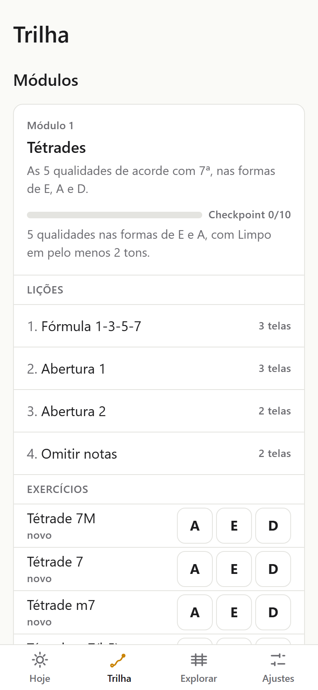
12Cada lição tem 1 a 3 telas curtas: uma frase, o exemplo no braço e o botão Ouvir. Avance com Próxima; no fim, Concluir marca a lição como vista.
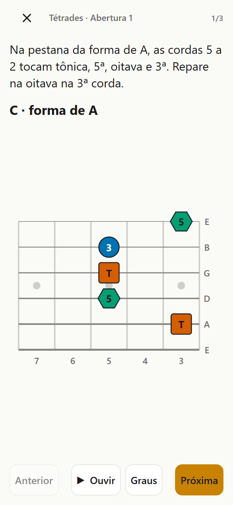
A Sessão do dia traz conteúdo novo do primeiro módulo cujo checkpoint ainda não foi concluído.
13Para tirar dúvidas e tocar o que quiser, sem avaliação:
Sortear escolhe um tom aleatório. ▶ toca o que está na tela.
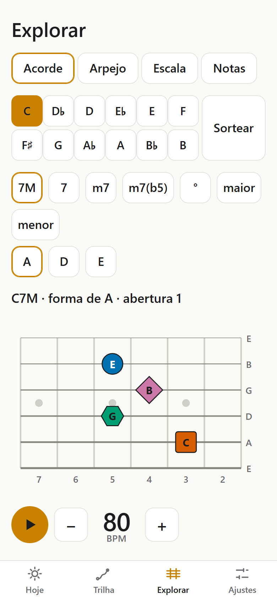
14| Tema | claro, escuro ou o do sistema. |
| Nomes | C D E ou Dó Ré Mi. |
| Rótulo | o que vai escrito no ponto: nota, grau, intervalo ou dedo. |
| Braço | pestana à direita ou à esquerda; Mi agudo em cima ou embaixo. |
| Modo TV | para espelhar na TV: quizzes viram “pense e revele” (Revelar → Próxima). |
| Dados | Apagar dados deste aparelho (não apaga o Gist). |
| Sobre | versão do app e últimos erros (útil se algo falhar). |
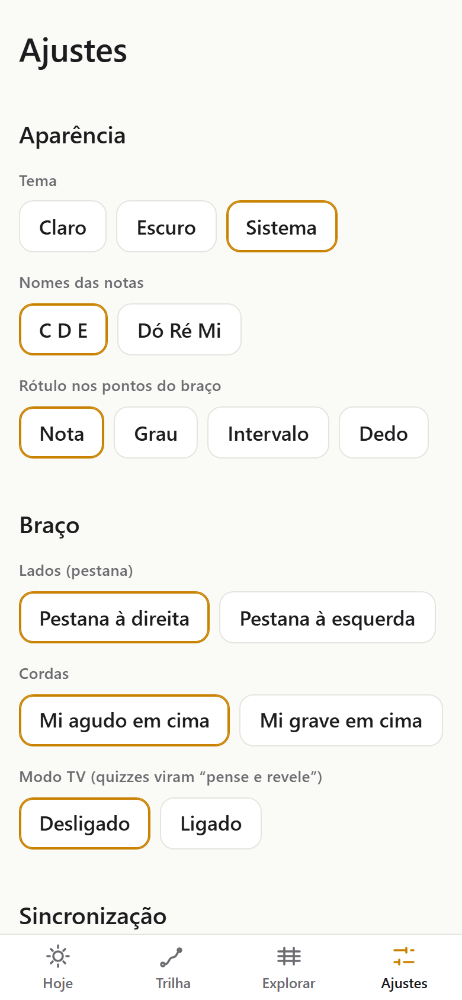
15Sem isso, o progresso fica só no aparelho. Com isso, celular, tablet e computador se juntam num Gist secreto no seu GitHub.
github_pat_).O app sincroniza sozinho ao abrir, ao voltar para ele e alguns segundos depois de cada avaliação. Para forçar: Sincronizar agora.
16Com teclado ou pedal Bluetooth (que envia teclas), dá para treinar sem soltar a guitarra:
| Espaço | tocar / pausar |
| ← → | BPM −2 / +2 (com Shift: ±10) |
| 1 2 3 | Limpo / Quase / Travou |
| Enter | próximo, ou aceitar a avaliação sugerida |
| Sem som | Toque ▶ de novo (o navegador só libera o áudio após um toque). No iPhone, desligue a chave de silencioso. |
| Som atrasado na TV | Normal no espelhamento. Use o som pelo celular. |
| Desenho espelhado errado | Ajustes → Braço. |
| “Salvo só neste aparelho” | Sem internet ou token vencido. Nada se perde; sincroniza depois. |
| Erro na tela | Toque em Recarregar. O erro fica em Ajustes → Sobre. |
Bom estudo — 20 minutos por dia rendem mais que 2 horas no fim de semana.
18